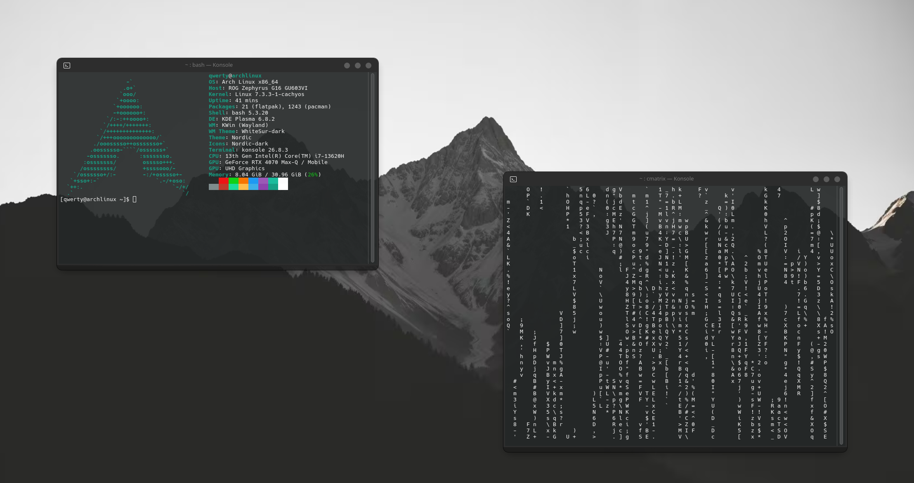

Hope you like it! Its my first official project. I Wanted it to be something small to get used to publishing. Ive made other projects before for fun, but this is the first one I would like to share.
I have worked on several projects in the past years, Such as: A Simple Mouse control center since arch linux does not have one for my own mouse A Game mod manager and downloader for a game called "People Playground" That pulls mod files directly from third party websites and downloads them for you, and also allows you to manage your mods. An Autofisher for a game called minecraft that automatically fishes using virtual inputs and a tracking system with notifactions and customizable features
Ive been using Linux for a few months now, and I love it! I personally like the freedom and control it provides. Though I still have a lot to learn. Below is a picture of my current setup.
